PUBLICATIONS

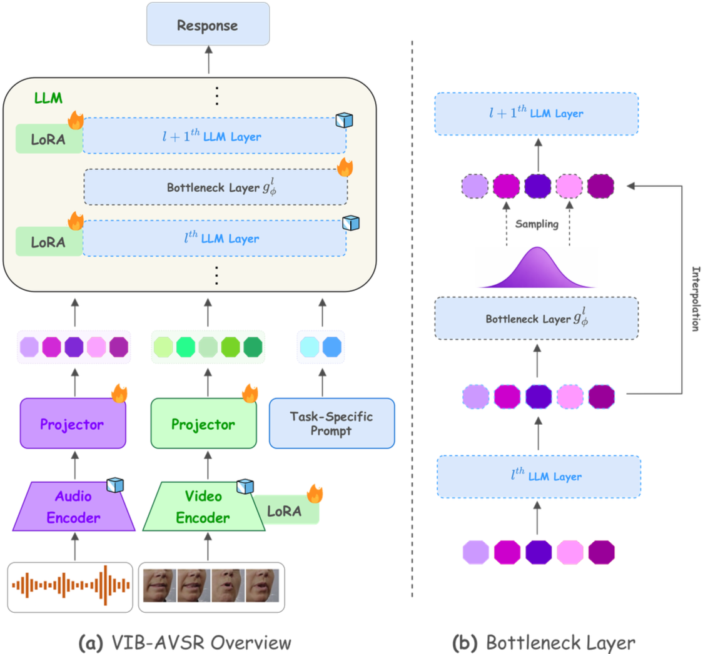
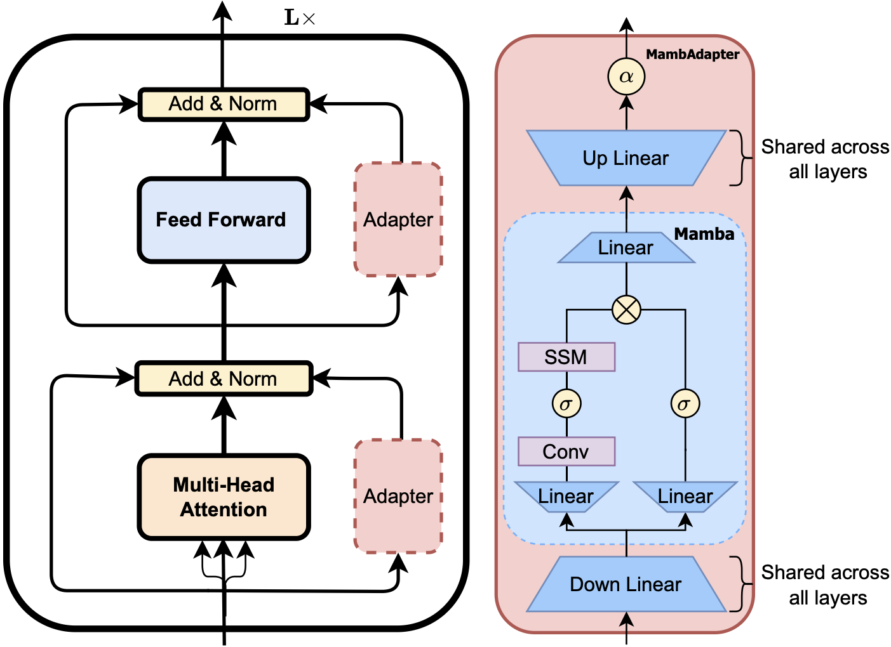
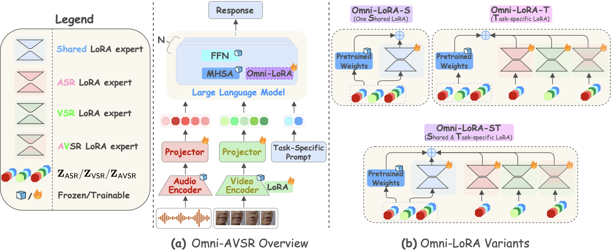
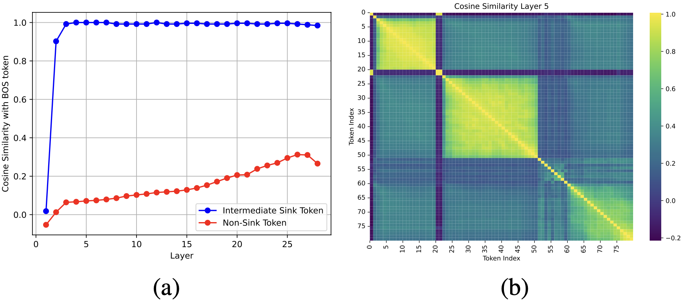
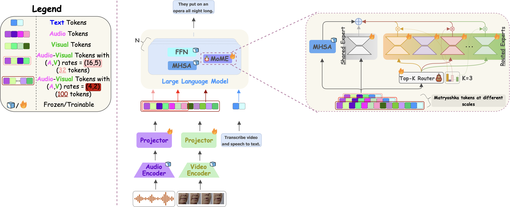
NeurIPS '25
MoME: Mixture of Matryoshka Experts for Audio-Visual Speech Recognition
U. Cappellazzo, M. Kim, P. Ma, H. Chen, X. Liu, S. Petridis, M. Pantic
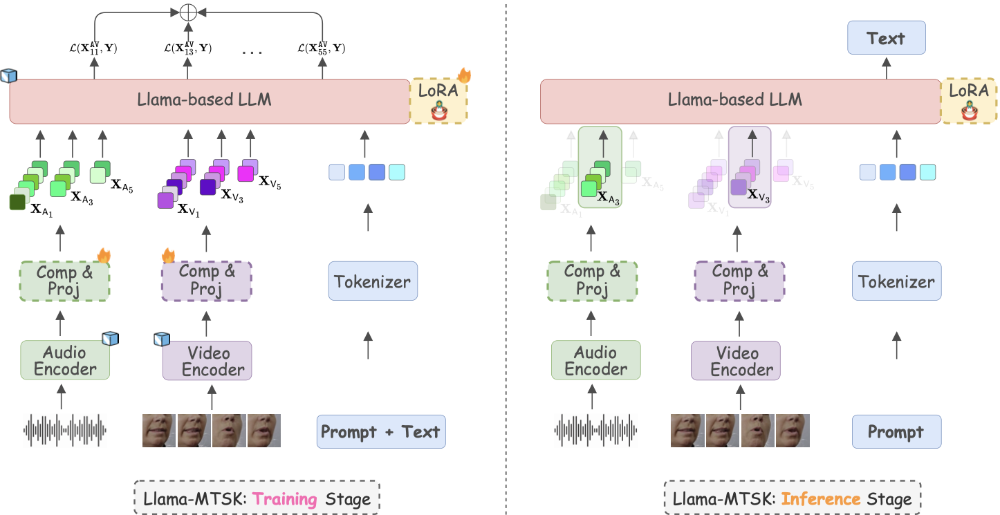
ASRU '25
Adaptive Audio-Visual Speech Recognition via Matryoshka-Based Multimodal LLMs
U. Cappellazzo, M. Kim, S. Petridis
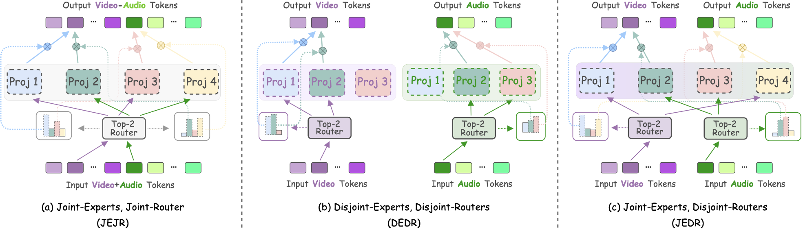
Interspeech '25
Scaling and Enhancing LLM-based AVSR: A Sparse Mixture of Projectors Approach
U. Cappellazzo, M. Kim, S. Petridis, D. Falavigna, A. Brutti
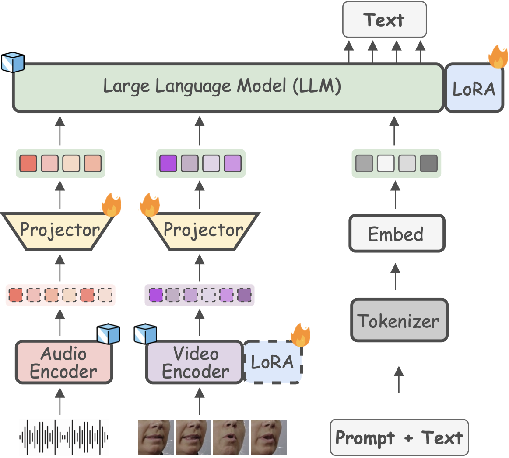
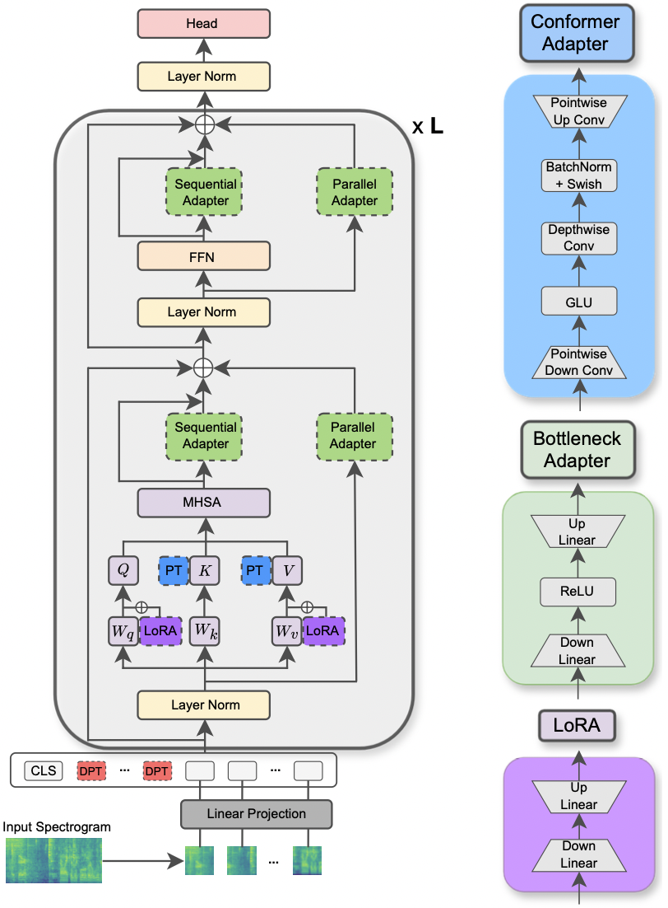
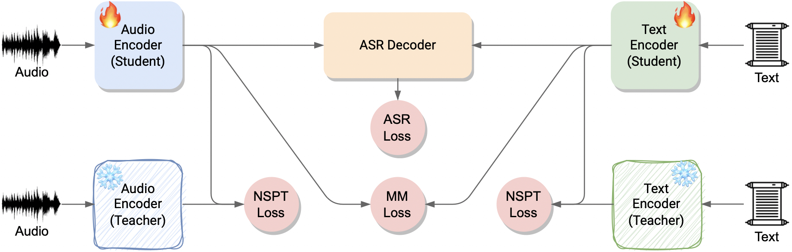
ACL Findings '24
Continual Contrastive Spoken Language Understanding
U. Cappellazzo, E. Fini, M. Yang, D. Falavigna, A. Brutti, B. Raj
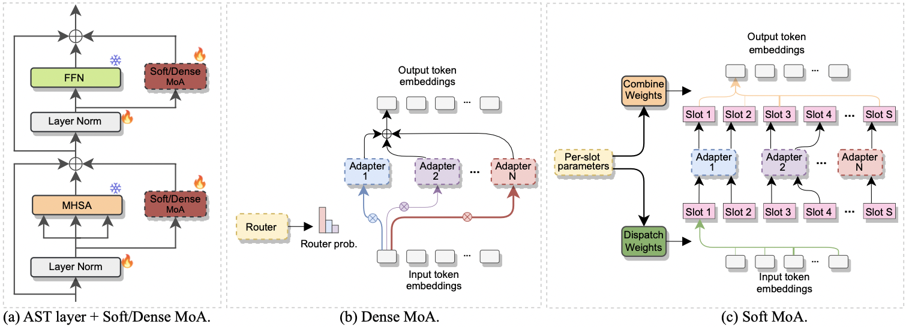
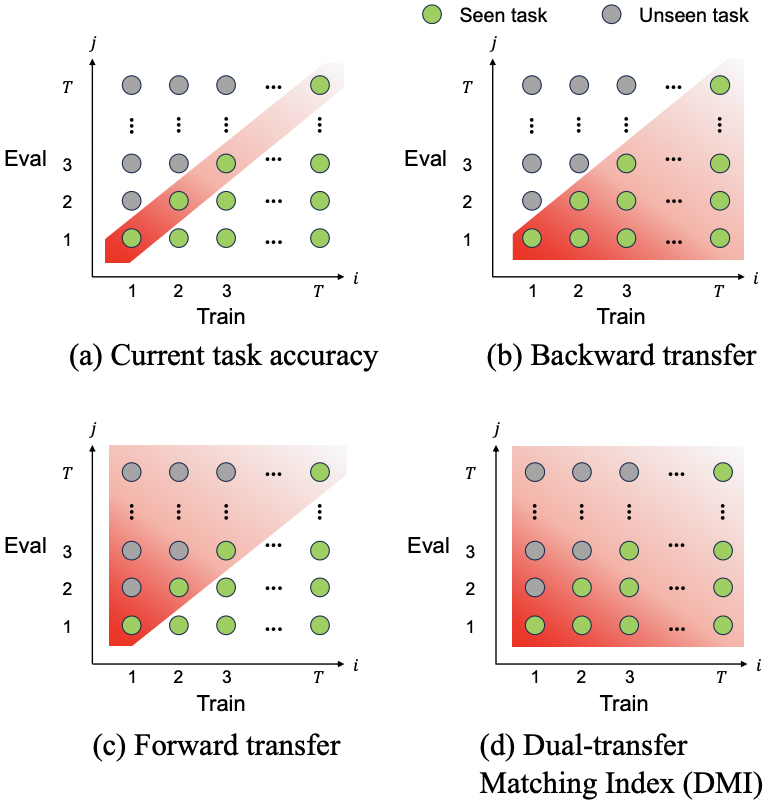
Interspeech '24
Evaluating and Improving Continual Learning in Spoken Language Understanding
M. Yang, X. Li, U. Cappellazzo, S. Watanabe, B. Raj
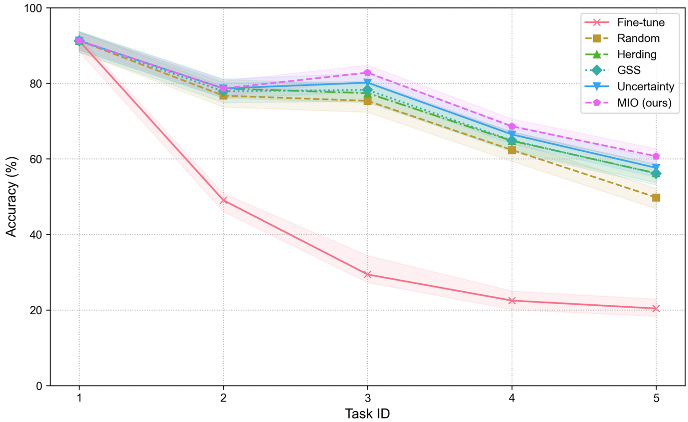
ICASSP '24
Improving Continual Learning of Acoustic Scene Classification via Mutual Information Optimization
M. Yang, U. Cappellazzo, X. Li, S. Watanabe, B. Raj
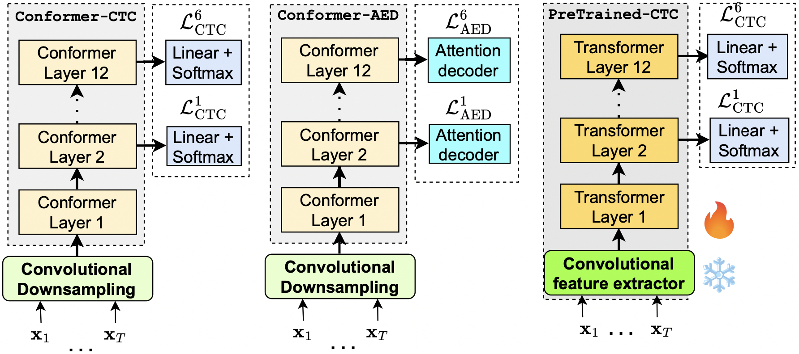
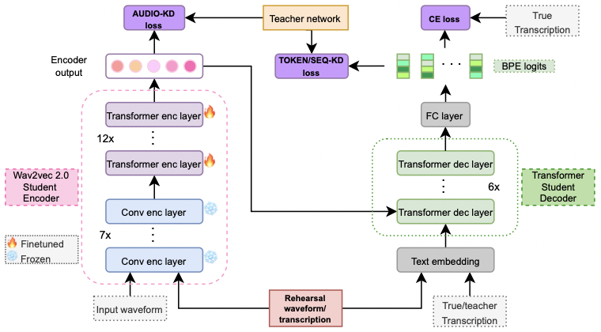